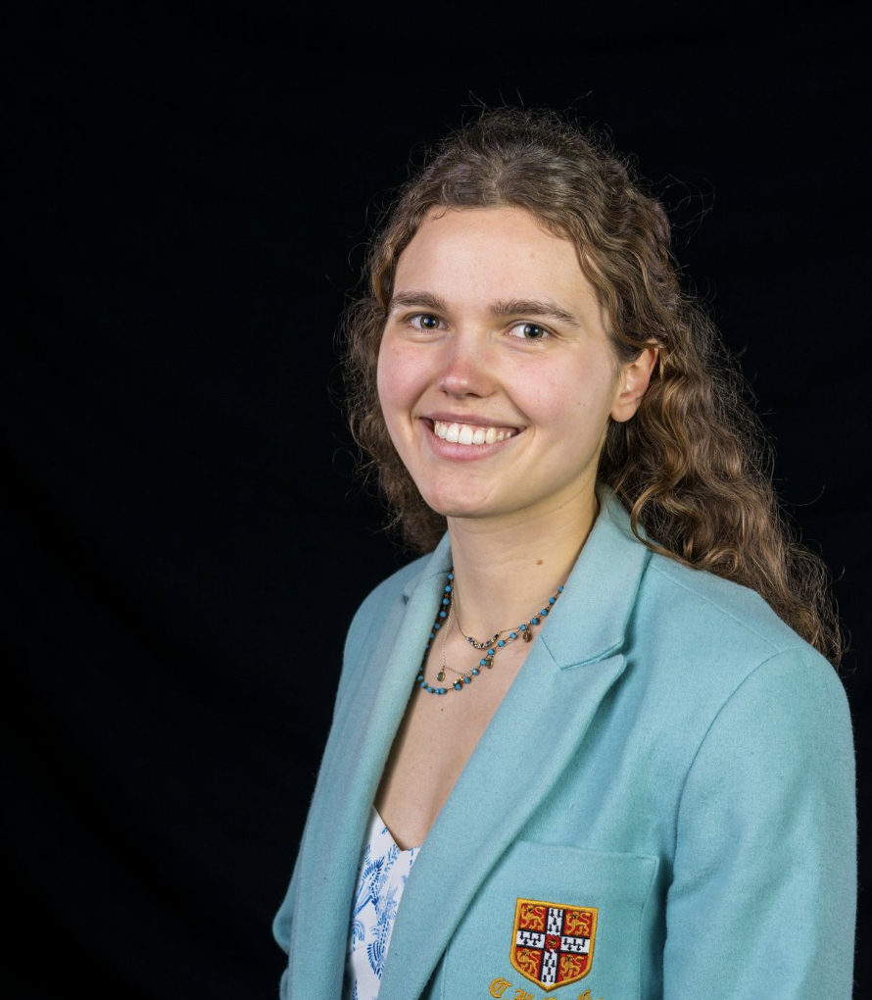
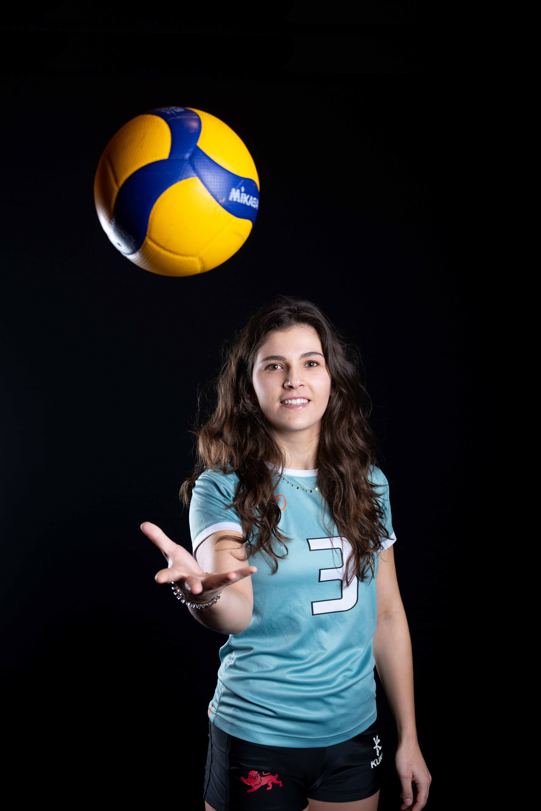

Shagun Garg
PhD Researcher · FIBE2 CDT
Monitoring Nature-based Solutions for hydrometeorological hazards using Earth Observation.
Remote sensing of water-related interventions — ponds, wetlands, river restoration —
with causal analysis to evaluate environmental risk mitigation.
Camilla Giulia Billari
PhD Student · AI4ER CDT · Centre for Sustainable Development
Machine learning and multi-modal data for water availability modelling.
Case studies include gauged streamflow of the River Nile and
multi-species water quality in England and Wales.

Lisanne Blok
PhD Student · AI4ER CDT · Department of Earth Sciences
Drivers and spatial distribution of extreme sea level and storm surges,
using weather, climate, and bathymetry data. Applying extreme value theory
and machine learning to impact- and policy-oriented studies.

Marine Mercier
PhD Researcher
Intersection of AI, remote sensing, and soil health.
Advanced computer vision methods applied to satellite and sensor data
to understand soil conditions and support sustainable land management.